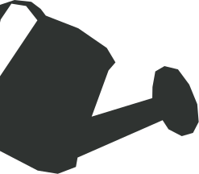
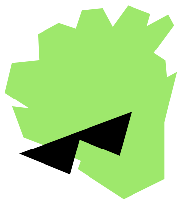

Rutis
0 очков
До урожая
День 1 из 10
Выполни первое задание!
Посев
Росток
Листья
Урожай


Шаг за шагом, без лишних знаний — от первого посева до первого укуса.
Это веб-приложение, оно не умеет напоминать. Открывай утром, выполняй задачи — урожай будет через 10 дней.
Так удобнее открывать каждый день
Делись результатами, задавай вопросы
Расскажи как прошло — твой отзыв помогает улучшать наборы
Безопасный антисептик — защищает ростки и даёт им фору при прорастании.